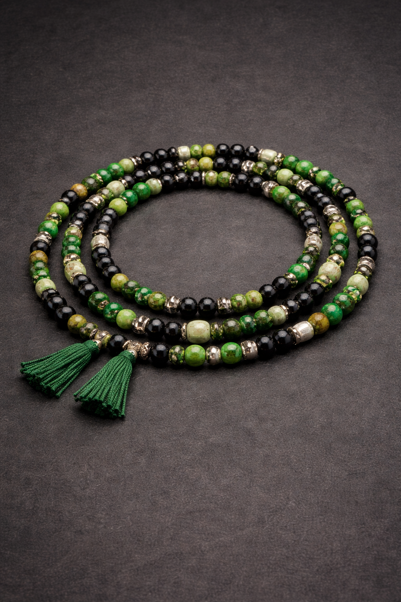

Ileke of the Week

Typical colors: Green & Black.
Core function: iron, work, discipline, cutting through obstacles.
Core function: iron, work, discipline, cutting through obstacles.
Study Prompts
- What is one “tool” you need to sharpen (skill, routine, mindset)?
- Where are you inconsistent—what would discipline change?
- How do you cut obstacles without harming people unnecessarily?
Weekly Reflection